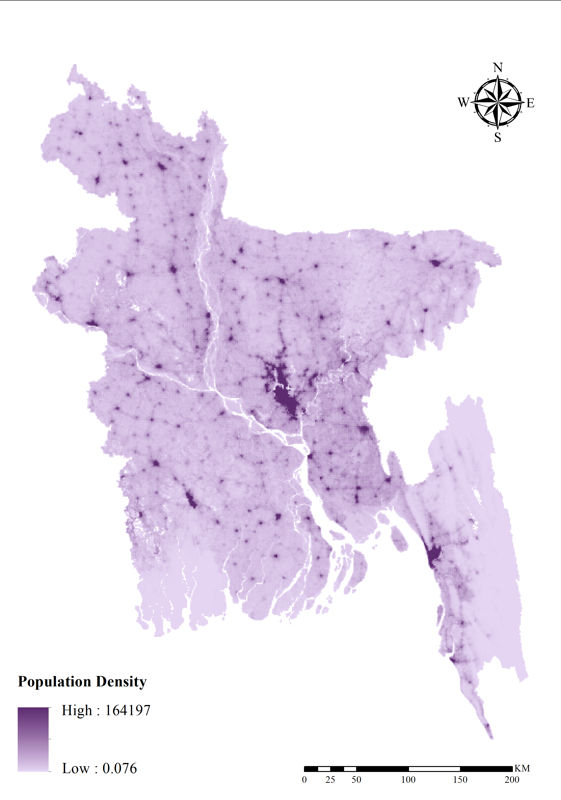
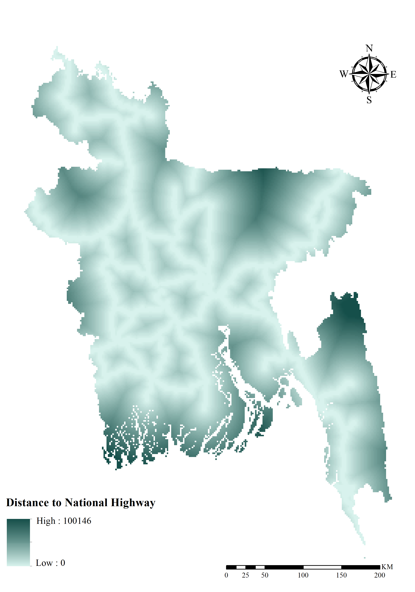
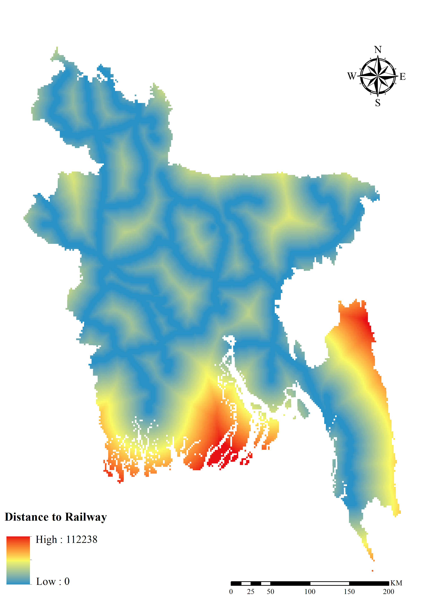
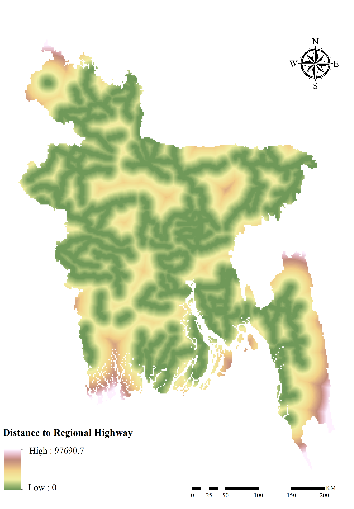
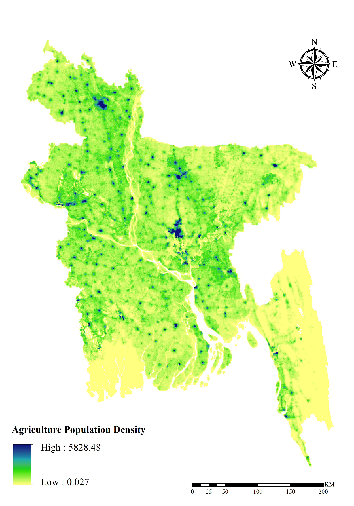
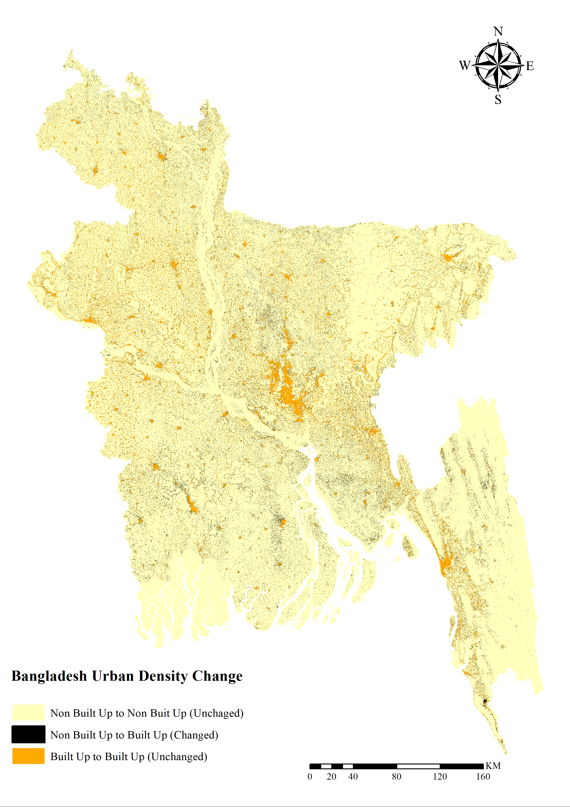
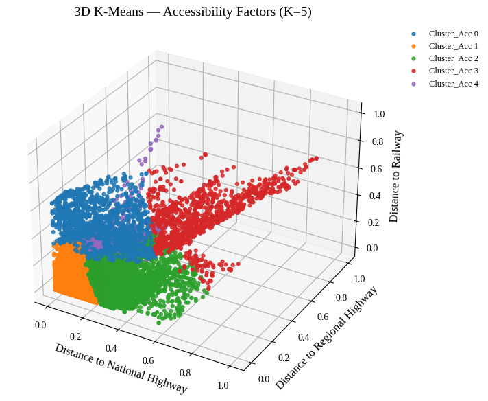
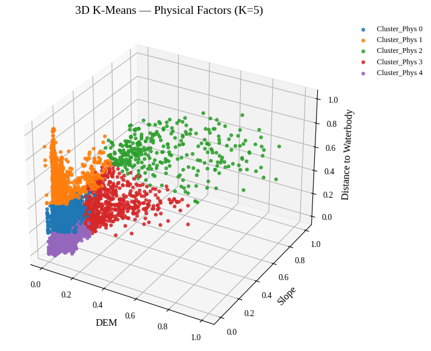
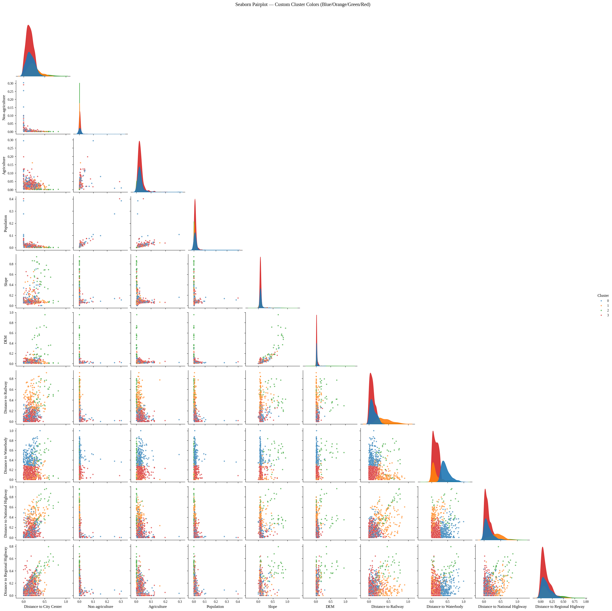

Objectives
- To quantify the relative influence of key socio-economic, environmental, and accessibility-related factors on built-up land expansion across Bangladesh.
- To compare the predictive performance of Logistic Regression, Random Forest, XGBoost, and Artificial Neural Networks and interpret regional variation in the drivers of urban change at the divisional level.
Bangladesh is experiencing rapid urbanization driven by multiple interacting factors, including population dynamics, economic activity and employment patterns, topography (elevation), proximity to urban centers, transportation networks, and the spatial distribution of waterbodies. However, the relative influence of these drivers on patterns of urban change remains insufficiently examined in the literature. To address this gap, this study applies and compares four modeling approaches—Logistic Regression, Random Forest, XGBoost, and Artificial Neural Networks—to quantify how these factors shape built-up land expansion.
Model performance was evaluated using standard classification metrics, including accuracy, precision, recall, F1-score, and the area under the ROC curve (ROC–AUC). Overall, the Random Forest and XGBoost models demonstrated superior predictive performance compared to Logistic Regression and the Artificial Neural Network. Results are presented at the divisional level to capture and compare regional heterogeneity in the determinants of urban change across Bangladesh.
Across most divisions, population, elevation, and distance to waterbodies consistently emerged as the most influential predictors of built-up expansion. Notably, Barishal exhibits a distinct spatial pattern in which built-up growth is strongly associated with proximity to the national highway. Earth observation analysis, supported by field verification, indicates that a major river constrains urban expansion and channels growth toward highway corridors. These insights support context-sensitive and sustainable urban planning.
Selected Factors










Results
Urban Density Change



Model Outcome

K-Means Cluster



Seaborn Pairplot
